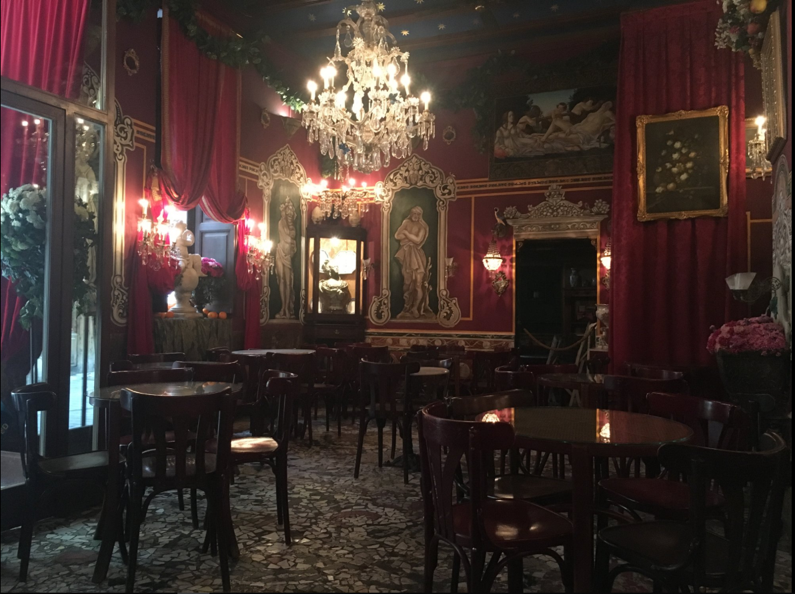

Café Las horas ha sido pensado para convertirse en un lugar tranquilo, relajado y discreto. Precisamente por ello,se ha confiado el proyecto a la esposa de Romain Fornell, Emma, que ha conseguido crear un ambiente muy acogedor, donde el cliente se sienta como en casa. Un espacio cálido y confortable pensado para personas de buen paladar pero que disponen, a veces, de poco tiempo para disfrutar de una cocina donde la calidad y esencia del producto son imprescindibles.
La planta que acoge el restaurante tiene tres espacios diferenciados, un primero en la entrada que funciona como terraza, seguido de la barra, y un tercero donde estásituado el comedor que se divide en dos por unas columnas.Cuenta además con una barra de ostras, y se ha destinado un espacio al fondo como pequeña boulangerie. Café Las Horas tiene una capacidad para 100 comensales y cuenta con un equipo de 14 personas.
